Практичні курси · журнал «ДентАрт» 2015 №4
Біоплівка та її вплив на пародонт
BIOFILM AND ITS IMPACT ON PERIODONT
Мікробний наліт, у сучасному трактуванні — біоплівка, в організмі людини вистилає поверхню шкіри, слизову оболонку шлунково-кишкового тракту, органів дихання, сечовивідних і статевих органів. Біологічна плівка розглядається як єдина активна біологічна істота, котра в комплексі взаємодіє з людським організмом протягом усього життя. Питома маса біоплівки в організмі дорослої людини становить від 1,8 до 2,2 кг. Властивості бактерій біоплівки визначаються особливостями будови навколишніх тканин і достатком поживних субстратів. Мікроорганізми, що входять до складу біоплівки, за впливом на макроорганізм умовно можна розподілити на корисні, нейтральні (комменсали) і шкідливі.
Ротова порожнина — це відкрита екосистема, в якій завжди присутні бактерії, котрі намагаються заселити всі доступні зони. На сьогодні у порожнині рота виявлено понад 530 видів бактерій, і здебільшого вони перебувають у стані «екологічного балансу» і не призводять до захворювань. У нормі існує рівновага між механізмами формування, ретенції біоплівки і механізмами самоочищення з боку слизової оболонки щік, губ і язика, правильного харчування та гігієнічних процедур.1 Біоплівка ротової порожнини комплексна і складається з кількох шарів різних штамів бактерій, які постійно реорганізуються. Товщина біоплівки залежить від термінів формування та фази розвитку і складається приблизно з 50-300 шарів. Спочатку відбувається зближення мікроорганізмів, потім їх адгезія і розмноження, потім формування мікроколоній біоплівки, і нарешті, утворення зрілої активної біологічної системи. Мікроорганізми, об'єднані у склад біоплівки, набувають нових якісних і кількісних характеристик, яких вони не мали у стані ізольованих монокультур, що забезпечує їм біологічну перевагу.3
Найважливішою властивістю біоплівки є охорона від інших конкуруючих мікроорганізмів і шкідливих зовнішніх факторів за рахунок реалізації таких механізмів: оптимального розподілу поживних субстратів, видалення потенційно шкідливих речовин або нейтралізації їх впливу за допомогою спеціалізованих колоній бактерій, створення єдиного фізико-хімічного середовища для захищеного зростання. Бактеріальна біоплівка має власну систему мікроциркуляції незалежно від організму господаря. Система канальців різного діаметру забезпечує керований рух рідини, яка, подібно до крові, служить для розподілу поживних речовин, що в ній містяться, кисню, вуглекислого газу та метаболічного обміну між різними штамами бактерій.
Бактерії біоплівки з різних штамів обмінюються інформацією за допомогою хімічного коду, і в процесі цього «спілкування» мікроорганізми здатні отримувати інформацію про присутність собі подібних і зміну умов навколишнього середовища, формувати групову стратегію подолання складних ситуацій, наприклад, при дії антибактеріальних або антисептичних факторів. Координація дій оптимізує опір і захист усієї спільноти шляхом управління активністю найбільш вірулентних і агресивних штамів мікроорганізмів з метою нейтралізації імунного захисту макроорганізму. Якщо концентрація молекул на зовнішній поверхні біоплівки при контакті з бактеріями-реципієнтами перевищує певний поріг, відбувається активізація поверхневих протеїнів, які, у свою чергу, активують або дезактивують функцію конкретних фрагментів генетичного коду бактерій. При цьому змінюються їх поведінка і властивості. Цей механізм отримав назву Quorum Sensing — механізм дистанційного спілкування між бактеріями за допомогою розповсюдження позаклітинних типів сигнальних молекул, який управляється певними генами бактерій.4,5
Доведено in vitro, що резистентність біоплівки до антибіотиків у 500-1000 разів перевищує аналогічну здатність окремих планктонних бактерій.2 Функція захисту біоплівки здійснюється таким чином: першими з антибіотиком контактують мікроорганізми поверхневого шару, причому ці бактерії приречені, але перш ніж загинути, вони виробляють сигнальні молекули, які по системі мікроциркуляції надходять до мікроорганізмів у нижніх шарах біоплівки і дають їм можливість зреагувати на небезпеку. Одні бактерії активують захисні молекули, які перешкоджають адгезії антибіотиків на зовнішніх мембранах клітин. Інші виробляють гідрофобні речовини, які запобігають проникненню антибіотиків через клітинну мембрану. Треті активують систему перекисного окислення і ферменти, зокрема β-лактамазу або каталазу, які деактивують молекули антибіотиків.6
Над яснами на поверхні зуба першими накопичуються грампозитивні бактерії (Streptococcus sp., Actinomyces sp.), потім починається колонізація грамнегативних коків, а також грампозитивних і грамнегативних паличок і перших ниткоподібних бактерій (Listgarten та ін., 1976). Метаболічні продукти сформованого активного біокомплексу впливають на навколишні тканини, викликаючи ексудацію і міграцію поліморфно-ядерних лейкоцитів у ділянці ясенної борозни, формується лейкоцитарний бар'єр, відбувається початкове розпушення з'єднувального епітелію, і простір між зубом і епітелієм ясенної борозни, який утворився, стає доступним для проникнення бактерій під ясна. Розвивається гінгівіт, відбувається формування ясенної, а згодом і пародонтальної кишені, де утворюється темний, жорсткий («сироватковий») зубний камінь, який важко видаляється.
Крім цього, у кишені виявляються вільні, пухкі, часто рухливі агломерати бактерій, що містять багато грамнегативних анаеробних мікроорганізмів і спірохет. Під час загострень кількість пародонтопатогенних бактерій (Actinobacillus actinomycetemcomitans, P. gingivalis, Т. forsythia, спірохети та ін.) може різко зростати, але незважаючи на ці зміни у складі бактеріального нальоту, інфекцію при пародонтиті, навіть у гострій стадії, не можна назвати високоспецифічною, оскільки існують значні відмінності бактеріальної картини у різних пацієнтів і навіть на різних ділянках ротової порожнини у одного і того ж самого пацієнта (Dzinket та ін., 1988; Slots, Taubman, 1992; Lindhe, 1997).
Опортуністичні мікроорганізми проявляють патогенність тільки при ослабленні захисту макроорганізму; вони входять до складу нормальної мікрофлори і зазвичай не завдають шкоди господареві, однак при зниженні опірності, наявності факторів ризику або імунодефіцитних станах може відбутися селективне розмноження бактерій зі слабкою вірулентністю, і це призведе до розвитку опортуністичної інфекції, що відповідає теорії розвитку пародонтиту по Socransky (Socransky, Haffajee, 1992).1 Аналізуючи думки зазначених авторів, можна стверджувати, що:
- Біоплівку слід розглядати як незалежну біологічну систему, що саморегулюється, а не як аморфне об'єднання різних бактерій.
- У біоплівки існує власна система мікроциркуляції, яка забезпечує метаболічний обмін всередині бактеріальної спільноти.
- Бактерії всередині біоплівки «спілкуються» за допомогою сигнальних молекул і за допомогою обміну генетичним матеріалом, ця властивість забезпечує регуляцію багатьох функцій і позначається як Quorum Sensing.
- Утворення бактеріальної біоплівки — постійний динамічний процес.
- Бактеріальна біоплівка активно розвивається на закритих поверхнях з поганим самоочищенням.
- Опортуністичні мікроорганізми виявляють патогенність лише при ослабленні захисту макроорганізму.
- Здатність бактерій протистояти антимікробним препаратам значно підвищується завдяки внутрішнім зв'язкам у біоплівці.
- Резистентність біоплівки до антибіотиків у 500-1000 разів перевищує аналогічну здатність окремих планктонних бактерій.
Таким чином, основний, найбільш виправданий шлях боротьби з ростом і розвитком над- і під'ясенної біоплівки, що веде до ефективного лікування і профілактики захворювань пародонту, — це її механічне руйнування, а створення біологічно адаптованої поверхні кореня зуба сприяє умовам для відновлення зубоясенного прикріплення. При механічному видаленні зубного нальоту відбувається зменшення загальної кількості бактерій і модифікація складу біоплівки. Це дозволяє змістити співвідношення бактеріального складу біоплівки на користь сапрофітів і зменшити кількість патогенних мікроорганізмів. І тоді при необхідності всі інші методи і засоби (у тому числі й медикаментозні), спрямовані на корекцію запально-дистрофічних процесів у пародонтальному комплексі, займуть належне, відповідне місце і будуть діяти максимально ефективно.
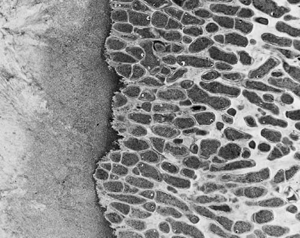
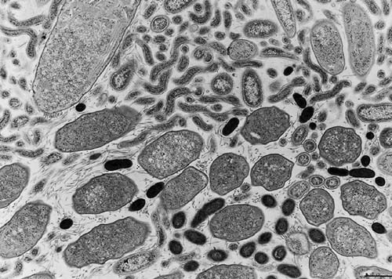
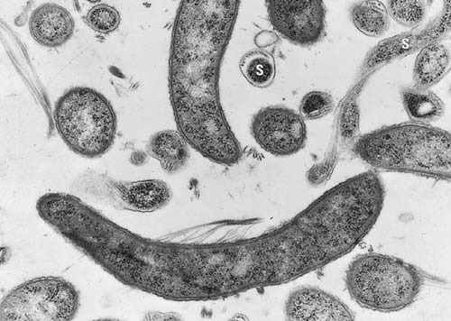
Подаємо власне клінічне спостереження, що ілюструє ефективність своєчасного професійного видалення зрілої, активної біоплівки в рамках комплексного лікування генералізованого пародонтиту.
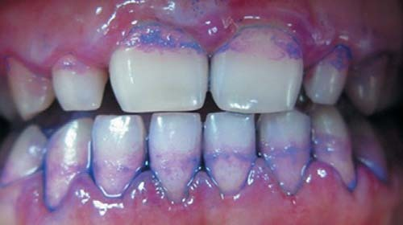
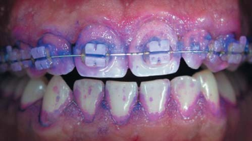
Клінічний випадок
Пацієнт М., 20 років, звернувся зі скаргами на різкий неприємний запах з рота, виражену хворобливість і кровоточивість ясен при вживанні їжі та чищенні зубів, наявність дискомфорту в усіх групах зубів протягом останніх двох місяців. Викурює пачку сигарет за день. Зовнішній огляд без особливостей. Зі слів пацієнта, загальносоматичні захворювання не виявлені. При панорамному рентгенографічному обстеженні визначається зниження висоти і контрастності верхівок міжзубних перегородок верхніх і нижньої щелеп.
Об'єктивно: візуально визначається набряк, гіперемія ясенних сосочків і маргінальної частини ясен в зоні всіх груп зубів, ясна легко кровоточать при зондуванні, слабкий біль при пальпації. При зондуванні визначаються пародонтальні кишені глибиною до 4 мм на верхніх і нижній щелепах. Патологічна рухливість зубів не визначається. Індекс кровоточивості BOP (Ainamo, Bay, 1975) 65%. Індекс зубного нальоту PI (O'leary, 1972) 80%.
Діагноз: генералізований пародонтит першого ступеня тяжкості, загострення.
Протокол лікування: антисептична обробка порожнини рота. Проведення механічного над- і під'ясенного скейлінгу за методикою одноетапного руйнування і видалення зубних відкладень (FMDe — Full Mouth Debridement), згладжування і полірування поверхні коренів зубів за допомогою кюрет Грейсі та апарата Вектор. Іригація пародонтальних кишень 0,5% розчином хлоргексидину. Призначено полоскання ротової порожнини 0,12% розчином хлоргексидину і втирання гелю на основі гіалуронової кислоти Дженджігель/Gengigel в ділянку маргінальних ясен протягом 14 днів. Навчання індивідуальній гігієні ротової порожнини, дано рекомендації.
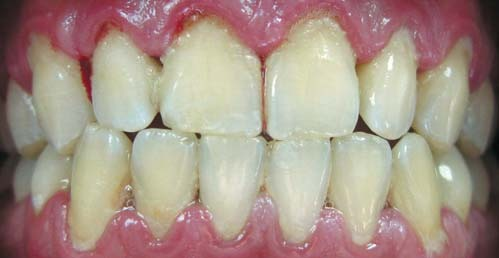
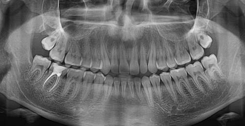
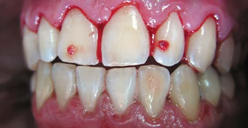
На цьому клінічному прикладі ми бачимо, що симптоми запалення пов'язані в першу чергу з наявністю зрілої активної біоплівки, тривале формування якої призвело до руйнування ясенної борозни, проникнення екзотоксинів у підлеглі мікро- і макроструктури пародонтального комплексу, формування пародонтальних кишень і як наслідок — розвитку і прояву клінічних ознак генералізованого дистрофічно-запального процесу. За один терапевтичний сеанс за допомогою механічного та хімічного руйнування ультраструктурного мікробного біокомплексу та створення необхідних умов для загоєння ми успішно, в короткий термін, домоглися відсутності скарг і клінічних ознак запалення.
Оцінюючи цей клінічний випадок через місяць, можна говорити про позитивний ефект, довгостроковий результат якого буде залежати від рівня індивідуальної гігієни та загальносоматичного здоров'я пацієнта. При сприятливому перебігу і низькому індексі зубного нальоту через 12 міс очікується зникнення рецесії папілярних ясен в ділянці зубів 12, 11, 21, 22.
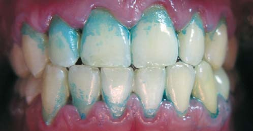
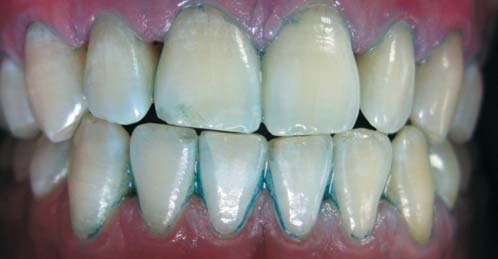
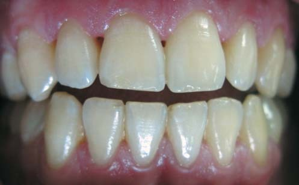
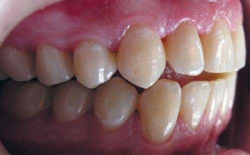
Одержаний результат дозволяє підтримати клініциста в його переконанні, що основою місцевого впливу на запальні та дистрофічно-запальні процеси в пародонтальному комплексі є повна ліквідація мінералізованих і немінералізованих зубних відкладень, і передусім за допомогою механічного їх руйнування, а медикаментозне лікування сприяє швидшому зникненню клінічних ознак запалення і збільшенню термінів ремісії. Крім того, очевидно, що проведення загальної антибіотикотерапії далеко не завжди є доцільним і може бути виправданим у випадках, пов'язаних, наприклад, зі зниженням імунної реактивності, ризиком розвитку ускладнень з боку серцево-судинної системи, агресивним перебігом запального процесу в тканинах пародонту, відсутністю позитивної динаміки безпосередньо після механічного видалення мікробного фактора та ін. І необхідно пам'ятати, що місцеве застосування ін'єкцій антибіотиків у ділянці перехідної складки може призвести до стійкого дисбіозу ротової порожнини, пригнічення місцевих захисних факторів і сенсибілізації організму.
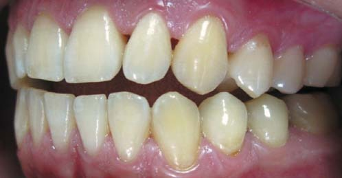
Фото 8. Клінічний вигляд стану ясен у бічній проекції ліворуч через місяць після лікування.
Безумовно, терміни настання клінічного благополуччя і тривалість періоду ремісії індивідуальні і залежать від багатьох факторів: віку, наявності загальносоматичної патології, ступеня тяжкості запального процесу, несприятливих місцевих факторів, біотипу ясен, що також слід враховувати стоматологові у клінічній практиці.
Література
- Вольф Г.Ф. Пародонтология / Г.Ф. Герберт, М.Р. Эдит, Р. Клаус; пер. с нем.; под ред. проф. Г. М. Барера. — М.: МЕДпресс-информ, 2008. — 548 с.
- Netuschil L. Biofilm als organisation form der plaque. Prophilaxe Dialog 2004; 9:7-8.
- Slots J., Jorgensen M.G. Effective, safe, practical and affordable periodontal therapy: where are we going, and are we there yet? Periodontology 2000-2002; 28:298-312.
- Socranssky S.S., Haffajee A.D., Cugini M.A., Kent R.L. Microbial complexes in subgingival plaque. J Clin periodontol 1998; 25:134-144.
- Valsecchi C. La vita sociale dei batteri. Le Scienze 2005; 438:47-51.
- Xu K.D., Mc. Feters G.A., Steward P.S. Biofilm resistance to antimicrobial agents. Microbiology 2000; 146:547-549.